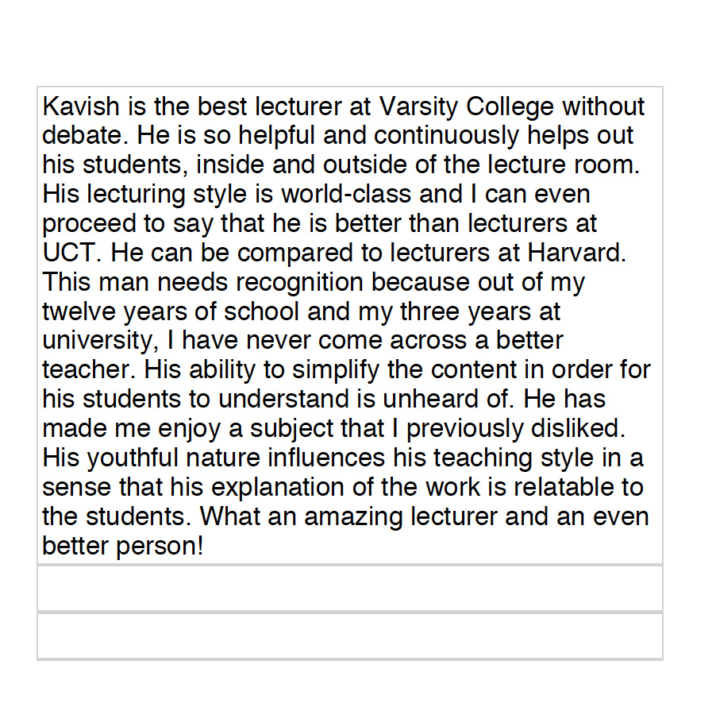
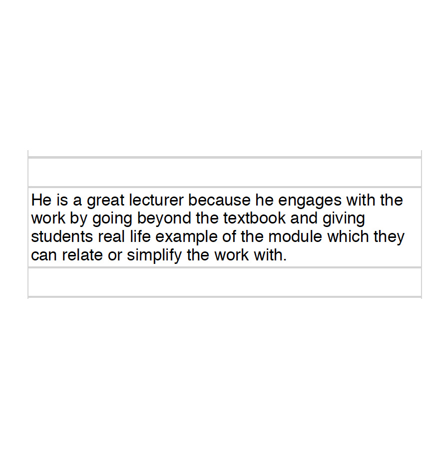
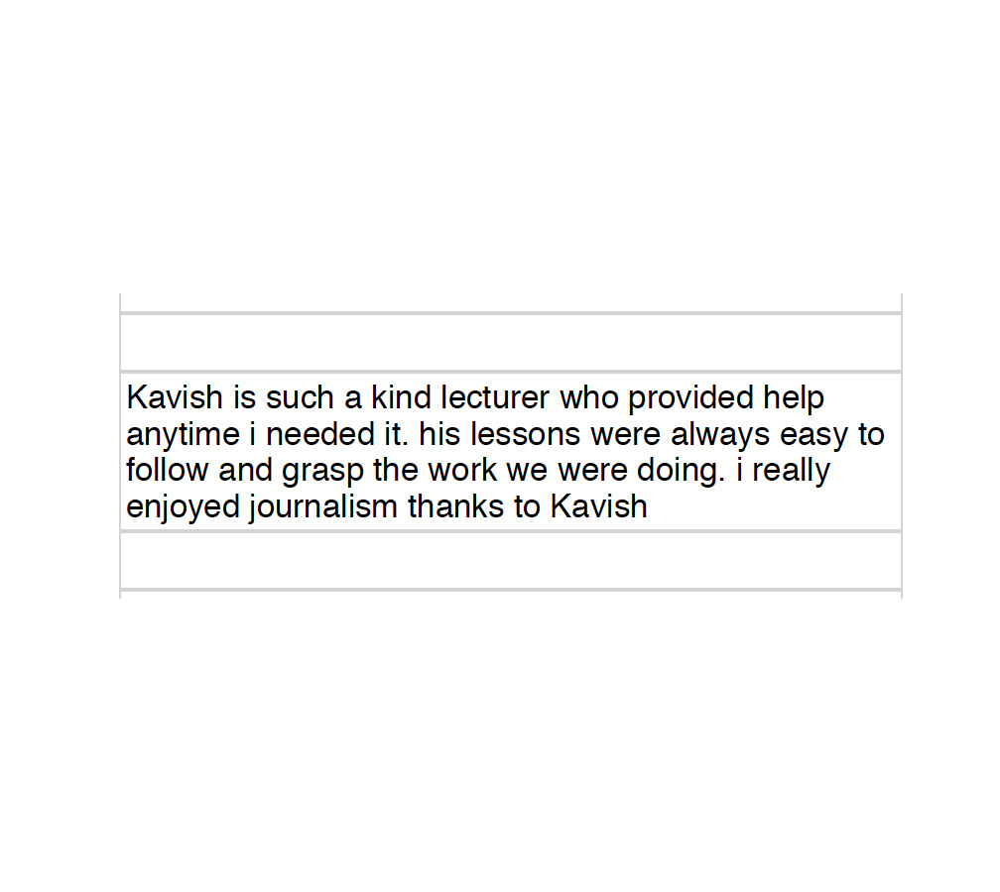
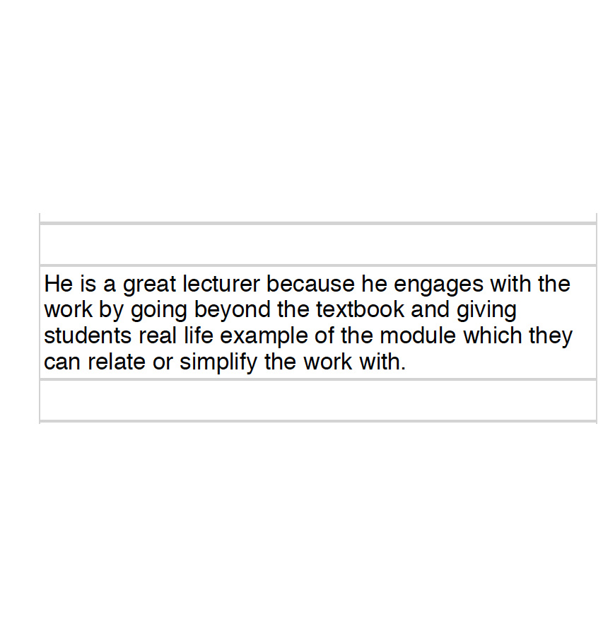
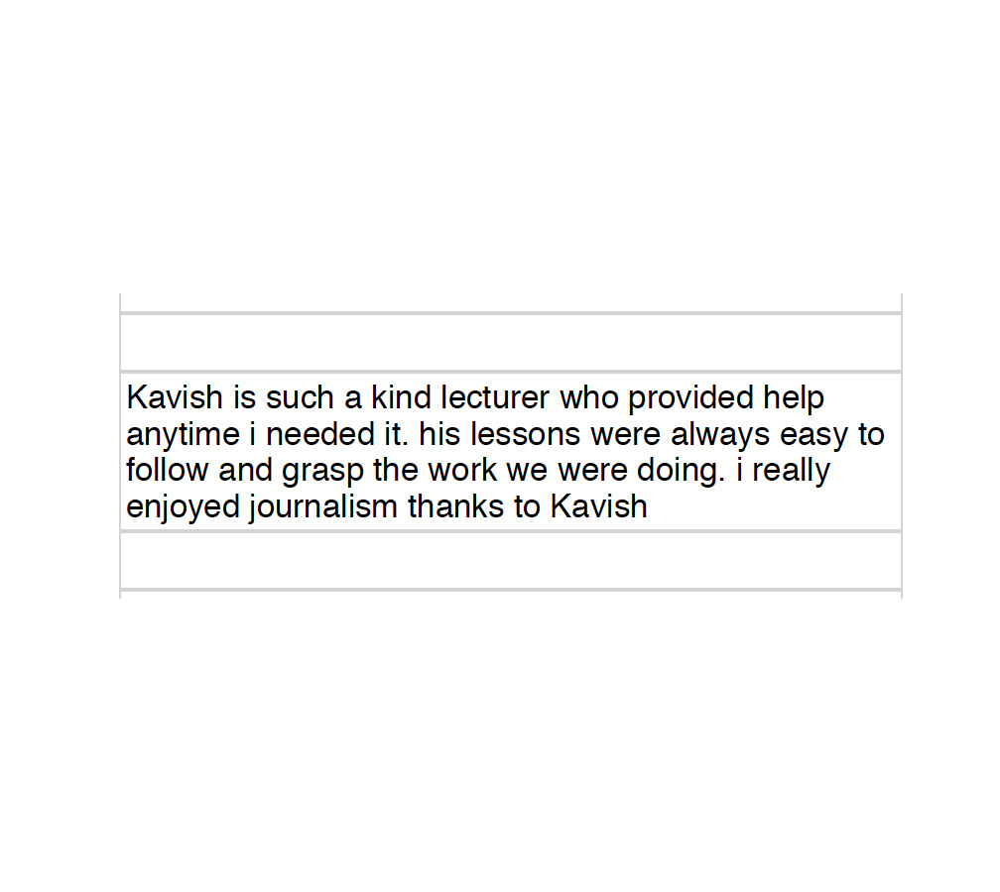
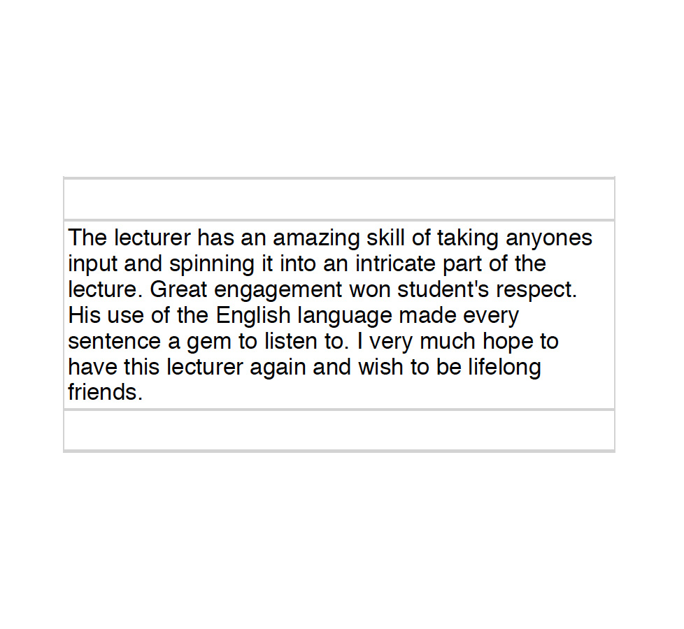
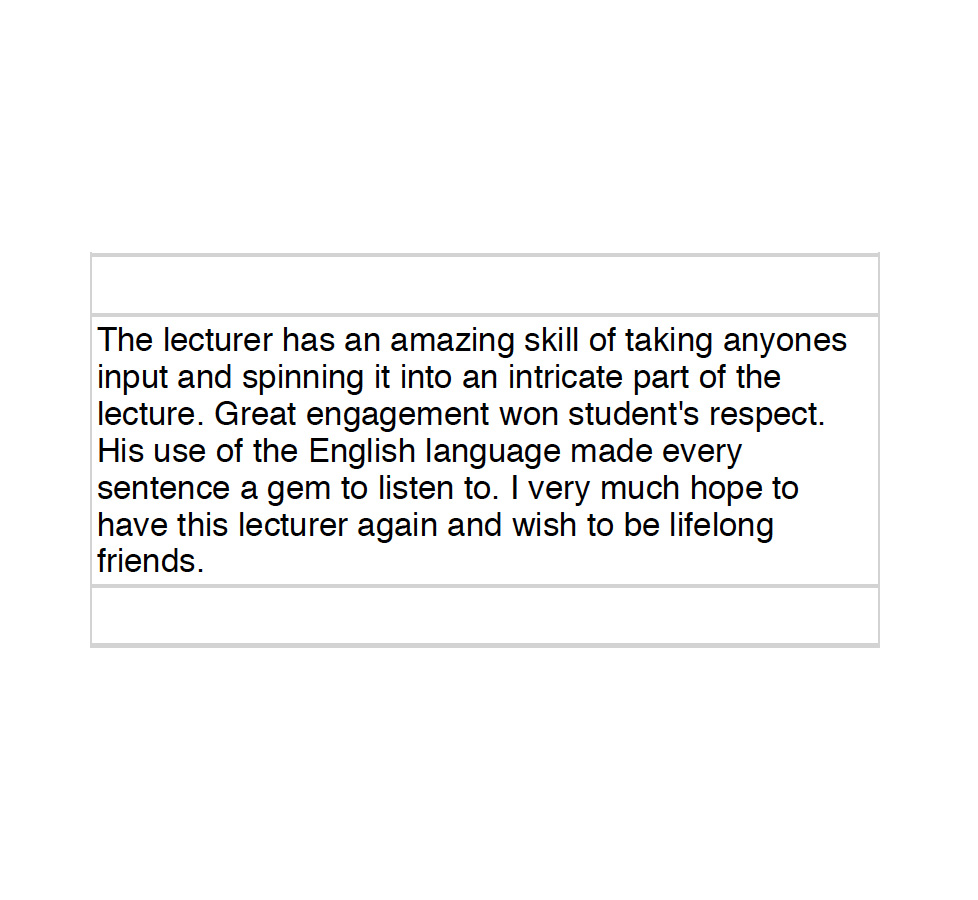

Teaching Portfolio for Kavish Chetty
Teaching Philosophy
My principal objective with teaching (both literature and journalism) is to get students to understand that the skills of analysis and interpretation they learn should not remain frozen on the page, but should rather allow them to journey into the world and make sense of the mysteries of society and culture. For this reason, I always take the approach that the materials of literature (poetry, novels, theory, essays) are to be inserted more generally within the field of culture (writing, music, cinema, videogames, social media, history, social relations) and I continually emphasise the self-empowerment that comes with the gradual mastery of the crafts of scholarship, creative writing and inquisitiveness. I aim to produce students who can intuit the connective tissue between ideas and practice and who are armed with an arsenal of concepts and capabilities they can use to make a positive impression on their sliver of the earth.
From my vantage, a successful afternoon in the classroom should always be a collaborative affair and one in which the students are able to see the abstract ideas they learn at university reflected in their experience of the world. For this reason, I tend to structure my classes around a balance of traditional lecturing and a more dynamic conversational style which incorporates elements of pop-culture, current affairs and a multimedia approach in which video and animation are as essential as reams of secondary readings.
I prefer to cultivate an older sibling or mentor persona in my relations with students so that they feel comfortable opening up to me about their goals and challenges and allow me the empathic and imaginative space to adapt my classes to the shape of their needs. One of the major difficulties I have determined among my present student cohort is that many of them require remedial interventions in some of the basics of English grammar and expression, essay writing and research, and I am certain that once they have come to grips with these essentials of undergraduate life in the humanities, they will feel much more comfortable with the excitements and adventures that a degree in English and journalism can open them up to. In the meantime, I will persist with my project of trying to develop their curiosities.
As far as enhancing my own teaching, I am currently a PhD candidate in literature at the University of Cape Town; I am active participant in the “Beyond Decoloniality” academic reading group and have been requested to put together an article for the forthcoming special edition issue of the journal Social Dynamics: A Journal of African Studies.
Teaching Practice
Teaching strategies and material development
I have tried out various experimental teaching strategies this year in order to encourage a more energetic learning space for my students (the successes and failures of which I will consider in the “reflective analysis” section). The first among these was to establish “reading groups”, whereby I split up my classes into groups of five and asked them to establish a group identity (a “group name” or “call-sign”). Then I would assign the course-compulsory secondary readings to them, with the twin ambition that getting together after classes would help to develop a critical social dimension to their undergraduate lives and that, helping each other through these sometimes cumbersome and challenging readings would demystify them and promote that skill which is an essential component of the study of literature: close reading.
Other ways in which I departed from a basic lecturing model was to incorporate insights from my long career as a teaching assistant at UCT conducting intimate, small-class tutorial sessions. So I structured my ICE tasks around class presentations and multiple-choice content quizzes and, noticing flagging class attendance (which became something of a campus-wide problem this semester) I incentivised attendance by offering a mark for those who were willing to join the class and participate simply by being present and soaking up some of the ideas that their peers contributed during class discussions.
I always aimed to develop my curriculum beyond the prescribed materials so as to give motivated students a greater immersion into the given field. In order to do this, I would curate a selection of secondary readings that provided context and scaffolding to the ideas and concepts under discussion, but would also prioritise the selection of videos, pop-culture artefacts and memes to help make our subjects of analysis less intimidating. One of my most successful classes was an introduction to poetry session, in which I instructed my students to conduct an interpretive analysis of the politically-charged animal rights anthem “Animal in Man” by hip-hop group Dead Prez (I provided them with print-outs of the lyrics and played the song for them in class), and then showed them how the same literary-critical approach could be extended to their prescribed poetry in the Renaissance and Romantic traditions. In a similar vein, my journalism students were always invited to bring any news items from their world to class for dissection and discussion. In this way, I discovered that my students have their own radar for current affairs, picking up signals from channels such as Tik Tok and other social media in fields as diverse as American politics, celebrity gossip, diet culture, television and cinema, and so on.
Student Support
I offer extensive after-class support to my students. This has included a 24-hour turnaround time on all email correspondence and private consultations over Whatsapp and COLLAB. In order to ease student anxieties, appointed class representatives are given my phone number which they are able to use to transmit any last-minute troubles or concerns to me on behalf of their peers (at reasonable times, of course). Because I truly value students who are committed to their training and their discipline I have also gone further and offered the following: I have mentored two of my journalism students by meeting up with them at coffee shops and giving them practical advice on how to enter the journalism industry, how to apply for internships and how to begin developing a writing portfolio which they can use to pitch ideas to some of the online magazines and newspapers at which I have worked over the years. I have also offered extensive additional feedback on ICE tasks to these same students, to help them edit and shape their writing. In time, as I ease into my labours at this institution, I hope to be able to foster active channels for publication for some of my student output. Lastly, I have always offered comprehensive, sometimes line-by-line, or paragraph-by-paragraph, feedback on student assignments (via comment bubbles) to help them understand the shortcomings (or triumphs) with their work beyond the scope of what the rubrics can make intelligible to them.
Reflective Analysis
My first year of teaching at Varsity College has been an eye-opening experience and a process of learning and adaptation. I hope to incorporate many of the insights I have gathered over this time into my teaching practice over the coming years; and to work toward finding a balanced approach to teaching here that is configured to the precise needs of my particular student cohorts. In this space I will reflect on some challenges and successes:
One of the struggles I have experienced this year is to be found in the related problems of discipline and attendance. This is a complication that is in some sense contextual and connected with the interruptions of the coronavirus and the general disarray that this brought to the world of traditional education. In my classroom, this manifested itself through consistent poor student attendance, as some students have come to relate to the physical classroom space as a vulgar additive to the ease of online classes, rather than as an essential part of the learning ecosystem, the dynamics of which simply cannot be entirely replicated in an electronic environment. For this reason, I endeavour to figure out ways of compelling students to attend classes and benefit from the unique enrichment that in-person lectures can offer. Because of this general migration away from classroom, many of my experimental collaborative approaches such as “reading groups”, class presentations, in-class discussions and debates, were only enjoyed by a select few dutiful students who made a habit of taking their literature and journalism courses seriously. My objective here is to understand how best to expand the sphere of influence such as to draw the reluctant students in, or alternatively, if there are no possible measures to improve attendance, to diversify the electronic space with resources that will enable them to nevertheless prepare themselves for exams in the absence of the vital classroom labours that should otherwise work to this effect.
Another challenge I encountered this year was coming to terms with the levels of commitment of my students to the respective disciplines on offer. For many of my classes, I discovered that the literature and journalism modules are electives and thus deprioritised by the student population who have no actual interest in taking up a role in the industries which are powered by graduates in these fields. For me, this meant trying to find an adjustment of my course materials which would preserve the essential skills I wish to transmit while at the same not alienating the (significant) portion of the cohort who were simply taking these courses by mandate rather than wish. For example, I swiftly learned to dial back on prescribing work from the more high-calibre and complex publication spaces like The New York Times, The Atlantic, The London Review of Books and Salon and offer students (critical) engagement with works from less threatening journalistic spaces like Cosmopolitan, Vox, GQ and Vanity Fair. I found that this almost instantly vaporised the sense of intimidation among the students and I was able to get them happily conversing on subjects like the Trump administration, Billie Eilish, socio-political issues in modern feminism, police brutality and so forth.
Otherwise, I thoroughly enjoyed my teaching year: I was spirited by the warm encouragement and admiration I received from my students (both in-person and in the evaluations) and emboldened in my own independent curiosities about both literature and its teaching. I remain faithful that my second year of teaching will see incremental improvements as I continue to be influenced by the students’ interests and work on shape-shifting my teaching practice to best transmit these valuable ideas to another generation of aspiring writers, scholars, entrepreneurs and psychologists.
Contact me
Email: kavish.chetty@gmail.com
Evidence
These are a small sample of the feedback I received from the 2021 Semester 1 Student Evaluations. The originals can be found in the SET documents for JRNS6211, ENGL6211 and ENGL5121.


 




 

The following are some examples of the ICE tasks I have independently designed, over and above the IIE materials provided as part of the course curriculum